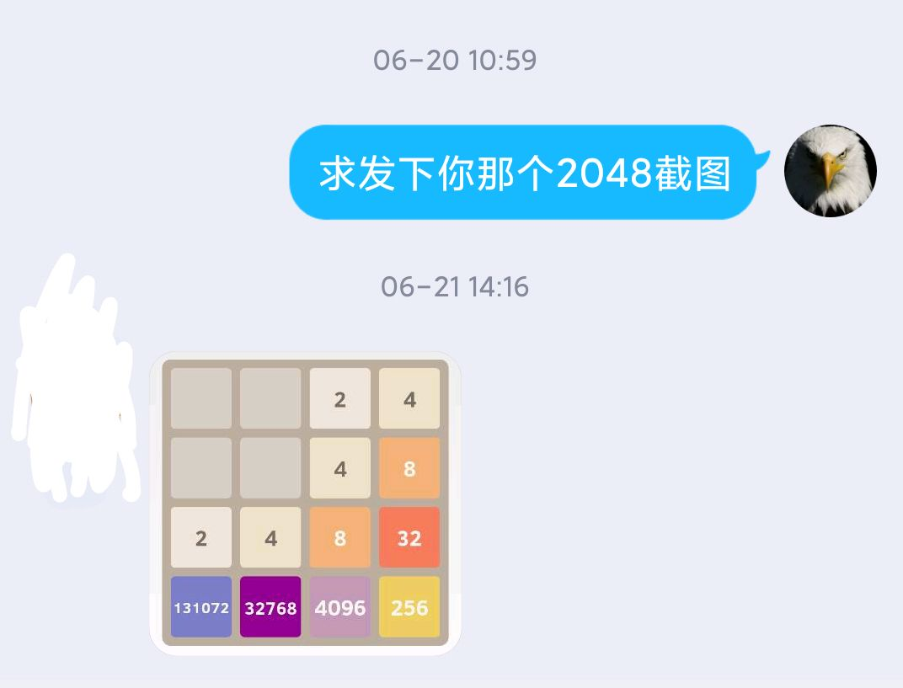

版本
切换版本可能需清理缓存
一个失败的版本v0.4
最新版本v0.3
v0.2
v0.1
原版
由于本人太菜无法找出能理论上最大只能到 1024 的算法，目前3个版本基本思路还都没有区别
如果有兴趣了解详情 可以联系：QQ 1290599932
在会机器学习前先鸽了
起源
这个故事是这样的：
2020/06/20 左右的某一天，
有一位同学在班里展示她把 2048 最大数玩到 2^16 的截图

普通 2048 我都玩不到 1024 的我无限仰慕
当我在Gery全球粉丝vip群讲这个事的时候
zjqaq：FC 你去写一个最大只能 1024 的让她玩啊
...
于是数日之后便有了 1024
——2020.9.20